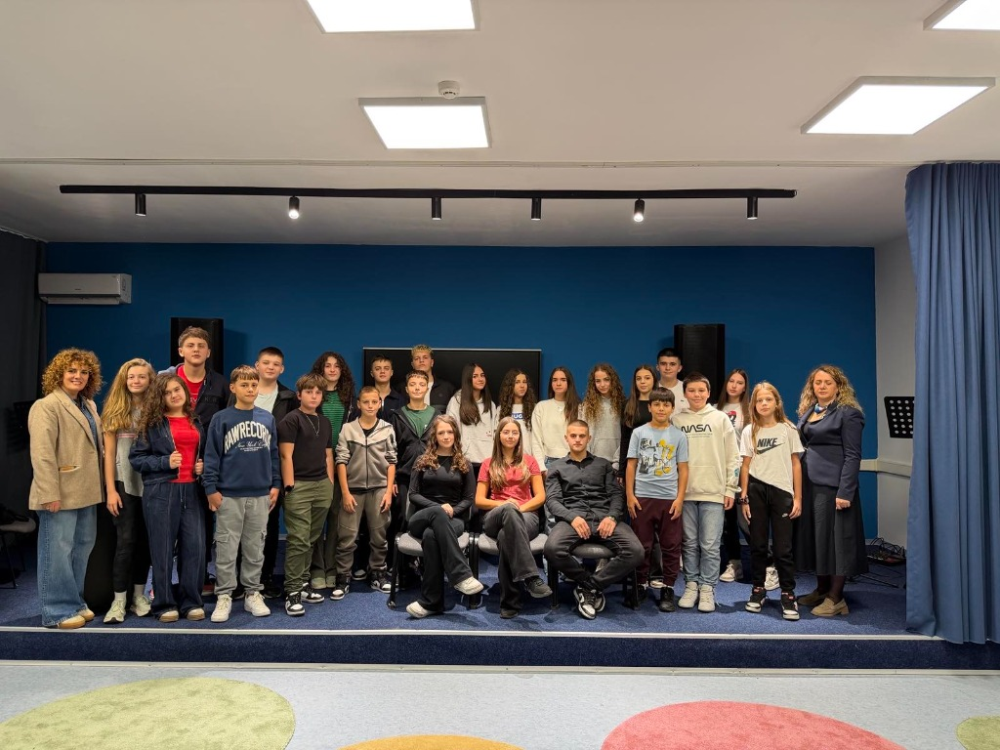

A school with a big heart
Curious minds.
Bright futures.
Welcome to Faik Konica School in Pristina — a community where every student can learn, find their voice and make a difference.
Meet our student councilLearning together since 1954

OUR SCHOOL
OUR COMMUNITY
Together is a wonderful place to be.
OUR COMMUNITY
01A place to grow
More than a school.
A community.
For generations, Faik Konica School has brought young people together to learn, explore and support one another. We are proud of our students, our teachers and the many ways our school comes to life.
1954Rooted in Pristina, growing together.
02Student voice
Meet the team
Student council
Representing our students, sharing ideas and bringing our school community closer.
Granit Zejnullahu
Ema Haliti
Lea Bullatovci
Riola Duraku
Nuar Llapashtica
Lir Krasniqi
Honourable mentionOrion AdemiHead of class 7/3
03Making memories
This school year
Our activities
A look back at the moments, conversations and causes we've shared.
World Peace Day
Music Day
Breast cancer awareness month
A talk by FLEX Global
Talk on human trafficking awareness
Talk by Mr Agim Rexhepi of the Friends of America Association
04Proud moments